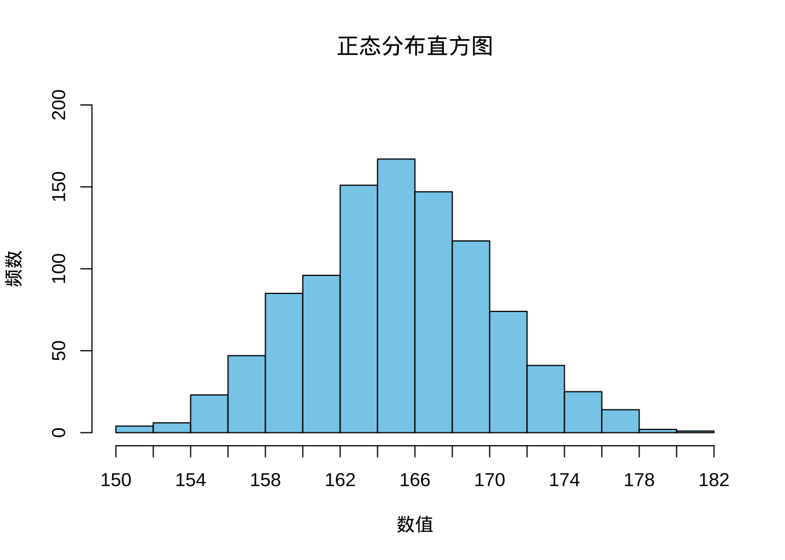
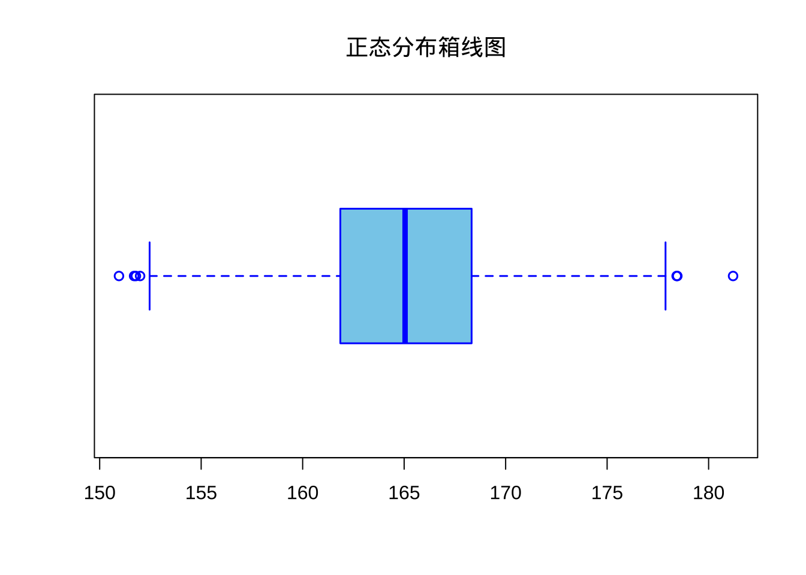

Loading required package: sysfontsLoading required package: showtextdbLoading required package: sysfontsLoading required package: showtextdb# 2 将1万元存入银行，年利率为1.35%，计算5年后、10年后的本息和，结果保留2位小数。
principal <- 10000
rate <- 0.0135
amount_5 <- principal*(1+rate)^5
amount_5 <- round(amount_5, 2)
amount_5[1] 10693.47[1] 11435.04principal <- 10000 # 本金
rate <- 0.0135 # 年利率
for (year in 1:10) {
amount <- principal * (1 + rate)^year
amount_rounded <- round(amount, 2)
# 使用sprintf格式化输出，%.2f强制保留两位小数
print(sprintf("第%d年的本息和为：%.2f元", year, amount_rounded))
} [1] "第1年的本息和为：10135.00元"
[1] "第2年的本息和为：10271.82元"
[1] "第3年的本息和为：10410.49元"
[1] "第4年的本息和为：10551.03元"
[1] "第5年的本息和为：10693.47元"
[1] "第6年的本息和为：10837.83元"
[1] "第7年的本息和为：10984.15元"
[1] "第8年的本息和为：11132.43元"
[1] "第9年的本息和为：11282.72元"
[1] "第10年的本息和为：11435.04元"# 生成一个服从正态分布的数列，自定义其均值和标准差，数列中包含1000个数，绘制其直方图和箱线图，将图形保存为png文件。
set.seed(123)
x <- rnorm(1000, mean = 165, sd = 5)
min(x)[1] 150.9511[1] 181.2052# 绘制直方图
# 绘制直方图
hist(x,
col = "skyblue", # 直方图填充颜色（天蓝色）
breaks = seq(150, 182, 2), # 自定义区间分割：从150到182，每隔2个单位划分一个区间
xlim = c(150, 182), # X轴显示范围限制（150~182，确保数据全覆盖）
ylim = c(0, 200), # Y轴显示范围限制（0~200，避免顶部截断高频柱）
main = "正态分布直方图", # 主标题（需根据实际数据分布调整名称）
xlab = "数值", # X轴标签（建议替换为实际含义，如"身高(cm)"）
ylab = "频数", # Y轴标签
xaxt = "n" # 关闭默认X轴刻度（以便后续自定义刻度）
)
# 手动添加X轴刻度
axis(1, # 在底部轴（1表示X轴）添加刻度
at = seq(150, 182, 2), # 刻度位置（与直方图区间对齐）
labels = seq(150, 182, 2) # 刻度标签（显示实际数值）
)
# 绘制箱线图
boxplot(
x,
col = "skyblue", # 箱体填充颜色（可用颜色名或十六进制代码如#87CEEB）
border = "blue", # 箱体边框颜色（默认黑色，此处设为蓝色增强对比）
main = "正态分布箱线图", # 图表标题（若数据非正态需修改描述）
lwd = 1.5, # 边框及中线粗细（默认1，增大数值如2可使线条更粗）
horizontal = TRUE # 水平方向展示（默认FALSE为垂直箱线图，适合长标签数据）
)